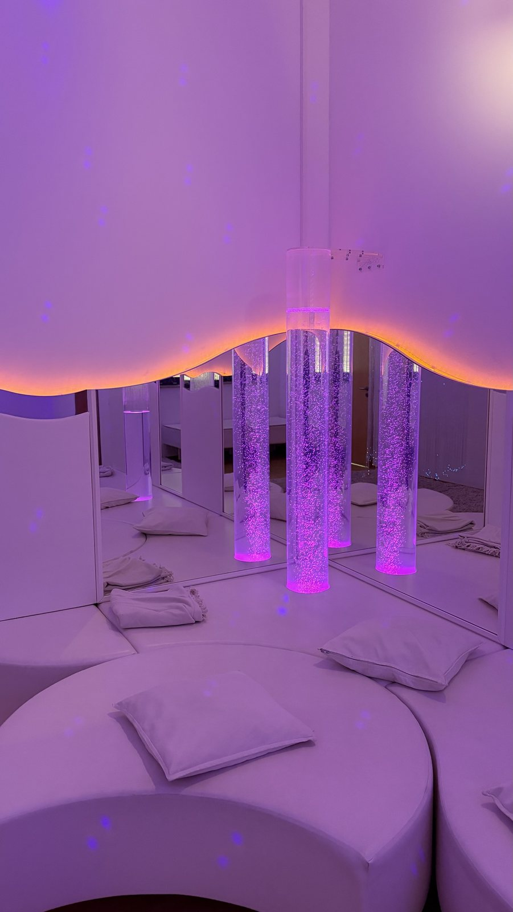
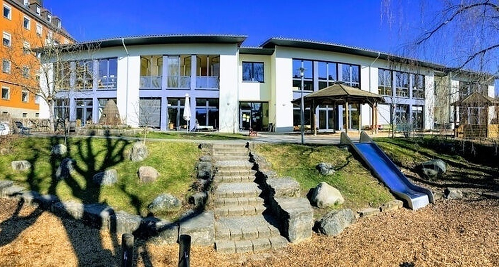
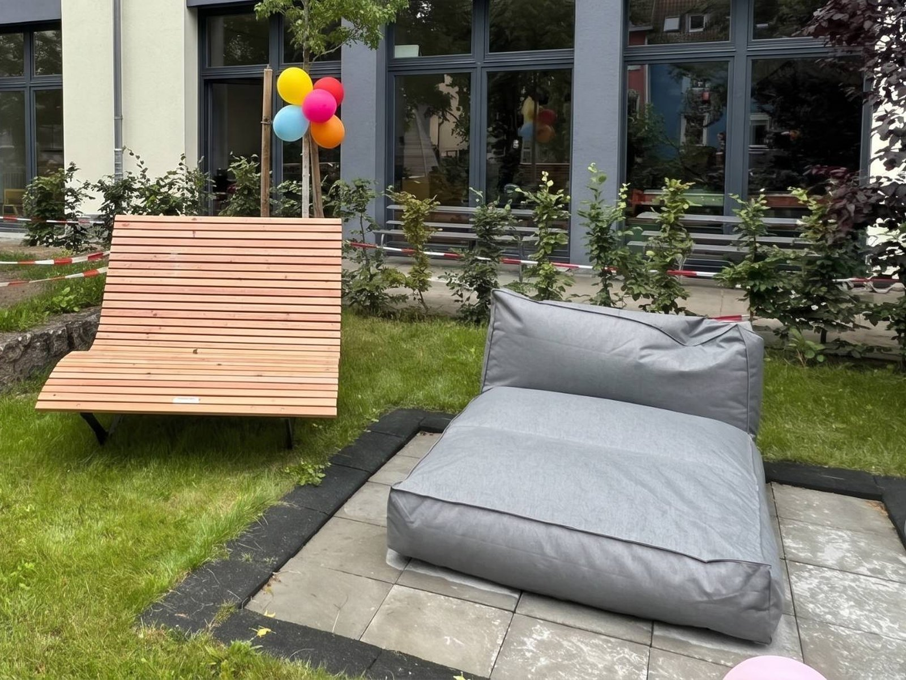

Weißer Raum
Wasserbett, Lichtwasserfall und Wassersäulen: ein Ort für Ruhe und Traumreisen.
Kinderkrippe, Kindergarten und Kinderhort unter einem Dach. Ihr Kind kann bei uns bleiben, von der ersten Eingewöhnung bis weit in die Schulzeit.

3Bereiche unter einem DachMit Krippe, Kindergarten und Hort unter einem Dach gibt es ein einheitliches Konzept und einen nahtlosen Wechsel.

Liebevolle Betreuung für die Kleinsten, bis zum August des Jahres, in dem sie 3 werden.
Zur KinderkrippeProjektarbeit, Englisch, Vorkurs Deutsch und viel Freispiel im großen Garten.
Zum Kindergarten
Für alle Schulformen, mit begleiteten und korrigierten Hausaufgaben, Freitagsausflügen und Ferienbetreuung.
Zum KinderhortWeil Qualität zählt. Vielfalt und Individualität sind uns wichtig, und das leben wir jeden Tag in unserer Pädagogik.
Drei Schritte, und wir begleiten Sie bei jedem.
Schreiben Sie uns, ab wann Sie einen Platz suchen. Die vorbereitete E-Mail enthält alle Angaben, die wir brauchen.
E-Mail schreibenGern zeigen wir Ihnen unser Haus und beantworten Ihre Fragen. Nennen Sie uns einfach Tage, die Ihnen passen.
Termin vorschlagenDie Eingewöhnung planen wir gemeinsam mit Ihnen, ganz nach den Bedürfnissen Ihres Kindes.
Fragen zur EingewöhnungViel Raum zum Spielen, Lernen und Entspannen, mitten in der Stadt.

Wasserbett, Lichtwasserfall und Wassersäulen: ein Ort für Ruhe und Traumreisen.

Zwei Köchinnen kochen täglich frisch und mit regionalen Zutaten.

Sehr großes Außengelände mit altem Baumbestand, trotz Stadtlage – für alle Bereiche.

Ich freue mich sehr, dass Sie sich für unsere Kita interessieren. Wir wollen Ihnen eine gute erste Orientierung geben und weiterhelfen, wenn Sie nach einer passenden Kita suchen.
Herzlich willkommen auf den Seiten des Kath. Kinder- und Jugendhortes Grombühl. Sicher fällt Ihnen gleich auf, dass wir eine vielfältige und große Kita sind, mit einem breit gefächerten Altersspektrum, das sich an Kinder von 11 Monaten bis hin zu 16 Jahren richtet. Vielfalt und Individualität sind uns wichtig und das praktizieren wir hier täglich in unserer Pädagogik.
Wir achten auf die Stärken jedes Kindes und wollen allen Kindern – ob Krippen-, Kindergarten- oder Hortkindern – vielfältige Möglichkeiten bieten, diese Stärken in sich zu entdecken und immer weiter zu entwickeln. Dazu braucht es vielfältige Angebote, Projekte und ein ausgewogenes Maß an Begleitung und Freiheit. Daran arbeiten wir täglich!
Gerne informieren wir Sie, wenn Sie mehr wissen möchten. Wir freuen uns auf Sie und Ihr Kind.
Petra Lachnit
Einrichtungsleitung
Nein. Wir sind eine katholische Einrichtung und feiern die Feste des Kirchenjahres, sind aber weltoffen für alle Religionen und Kulturen.
In der Kinderkrippe etwa vier Wochen, gemeinsam mit Ihnen geplant. Im Kindergarten verläuft sie für jedes Kind unterschiedlich.
Ja. In allen Bereichen haben wir an höchstens 30 gleichen Tagen im Jahr geschlossen.
In der Kinderkrippe ja: Windeln, Feuchttücher und ggf. Wundschutzcreme, damit jedes Kind mit seinen eigenen Produkten gewickelt wird.
Nein. Braucht Ihr Kind noch eine Windel, unterstützen wir es auf dem Weg zum Sauberwerden.
Unsere hauseigene Küche. Zwei Köchinnen kochen jeden Tag frisch.
Ihre Frage ist nicht dabei? Fragen Sie einfach unser Fragefeld
Sie haben Fragen zu Krippe, Kindergarten oder Hort? Schreiben Sie uns oder rufen Sie an.
Lindleinstraße 20, 97080 WürzburgRoute planen